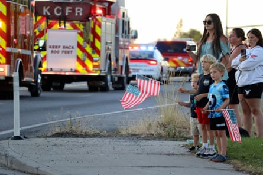

As a wildfire began to sow panic in a small northern Idaho mountain community, a group of firefighters who rushed to put out the blaze instead found themselves in an unexpected shootout.
A man shot the firefighters who were battling a blaze in northern Idaho after they asked him to move his vehicle, killing two of them and wounding a third, a sheriff said on Monday.
They took cover behind fire trucks, but two died and a third was wounded during a barrage of gunfire over several hours, authorities said. It appears the man later killed himself, Kootenai county sheriff Bob Norris said.
First responders made urgent calls for help on their radios at Canfield Mountain just north of Coeur d’Alene: “Everybody’s shot up here … send law enforcement now,” according to one dispatch.
Two helicopters converged on the area, armed with snipers ready to take out the suspect if needed, while the FBI used his cellphone data to track him and the sheriff ordered residents to shelter in place. They eventually found the suspect dead in the mountains, his firearm beside him.
The suspect has been identified as Wess Roley, a law enforcement official told the Associated Press on Monday. The official spoke on the condition of anonymity because they were not authorized to discuss the investigation.
“We do believe that the suspect started the fire, and we do believe that it was an ambush and it was intentional,” the Kootenai county sheriff, Bob Norris, said at a Sunday night news conference. “These firefighters did not have a chance.”
The wounded firefighter was “fighting for his life” after surgery and was in stable condition, Norris said.
“When you have an environment where you don’t know where the bullets are coming from because of the trees and the shrubbery and what have you, it is daunting for police officers, let alone firefighters,” Norris said.
The outpouring of support was swift in Coeur d’Alene, a city of 55,000 residents near the border with Washington.
A procession from Kootenai Health heads to the medical examiner’s office in Spokane, Washington, after firefighters were killed on Sunday.Photograph: Bill Buley/AP
Hours after the ambush, people gathered along Interstate 90 holding American flags to pay their respects as the two fallen firefighters’ bodies were taken to the medical examiner’s office in Spokane, Washington, about 35 miles (56km) from Coeur d’Alene.
Governor Brad Little on Monday ordered US and Idaho state flags to be lowered to half-staff to honor the firefighters until the day after their memorial service.
“All our public safety officers, especially our firefighters, bravely confront danger on a daily basis but we have never seen a heinous act of violence like this on our firefighters before,” he said in a statement. “This is not Idaho. This indescribable loss is felt deeply by all those in the firefighting community and beyond.”
The Idaho house Republican leadership said in a statement: “We are horrified by the murder of two firefighters in Coeur d’Alene, and shocked by such a vicious attack on our first responders. We are praying for them, the injured, their families and their colleagues.”
Though the shelter-in-place order was lifted, the sheriff’s office cautioned residents to be prepared because the fire was still burning. The status of the fire was not immediately known on Monday morning.
Canfield Mountain is a popular hiking and biking area on the outskirts of Coeur d’Alene, covered with trees and heavy brush and crisscrossed with trails that lead into a national forest.
Fire is always a concern for the region, said Bruce Deming, whose property abuts the trail system. When he noticed smoke on the ridge on Sunday afternoon, he wondered why no firefighting helicopters were responding.
When a friend texted to tell him about the shooting, he realized why he was not seeing aircraft. “Because they’re concerned about being shot at,” he said.
As deputies set up posts nearby, Deming pointed them to a trail that starts near his backdoor and leads directly to the site of the fire.
“I just don’t want to have to wake up in the middle of the night to figure if somebody’s out prowling around my place,” he said.